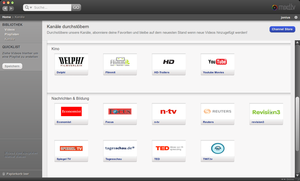

Mixd.tv
Archivierte Anleitung
Dieser Artikel wurde archiviert, da er - oder Teile daraus - nur noch unter einer älteren Ubuntu-Version nutzbar ist. Diese Anleitung wird vom Wiki-Team weder auf Richtigkeit überprüft noch anderweitig gepflegt. Zusätzlich wurde der Artikel für weitere Änderungen gesperrt.
Zum Verständnis dieses Artikels sind folgende Seiten hilfreich:
Das junge Berliner Unternehmen Media Wedding hat mit mixd.tv  eine Open-Source-Software und Plattform zum Entdecken von Videoinhalten entwickelt. Es hat sich auf die Fahne geschrieben, die Onlinevideowelt zu verändern.
eine Open-Source-Software und Plattform zum Entdecken von Videoinhalten entwickelt. Es hat sich auf die Fahne geschrieben, die Onlinevideowelt zu verändern.
Videos sind über das gesamte Internet verteilt. Bei mixd.tv wird ein zentraler Anlaufpunkt zum Suchen, zum Entdecken und zum Anschauen von Online-Videos entwickelt. Es hat zudem die Funktion, Videos vorzumerken und offline abzuspielen. Das Programm befindet sich noch in der Betaphase.
Installation¶
Hinweis:
Aktuell wird eine neue Version entwickelt, die alte aber nicht mehr angeboten. Wenn man das Programm dennoch testen will, kann man sich für die Beta-Version anmelden.
Für mixd.tv stehen auf der Webseite Ubuntupakete  für 32- und 64-bit-Systeme bereit, über die das Programm installiert werden kann[1].
für 32- und 64-bit-Systeme bereit, über die das Programm installiert werden kann[1].
Hinweis!
Zusätzliche Fremdquellen können das System gefährden.
Das Programm kann dann sofort gestartet werden [2].
Bedienung¶
 Das Programm findet man unter
Das Programm findet man unter
"Anwendungen → Unterhaltungsmedien → mixd.tv"
Zuerst wird man aufgefordert, ein Konto zu registrieren, mit dem man sich dann einloggt. Nach dem Einloggen begrüßt einen der Startbildschirm und bietet sogleich seine Hilfe an.
Quicklist¶
Die Quicklist wird in der linken Leiste angezeigt. Videos können einfach mit der Maus hierher gezogen werden. Diese werden dann bereits heruntergeladen und können auch später bei getrennter Internetverbindung geschaut werden.
Videos¶
Hier werden Videos aufgelistet, die favorisiert worden sind. Favorisiert werden können Videos, indem man beim Schauen den kleinen Stern anklickt.
Playlisten¶
Hier findet man die abonnierten oder selbsterstellten Playlisten. Um eine neue Playliste zu erstellen, klickt man bei einem Video auf "+-Playlist". In dem sich öffnenden Menü kann eine neue Playlist erstellt oder das Video einer bestehenden Playlist hinzugefügt werden. Alternativ kann man die aktuelle Quicklist als Playlist speichern. Beim Speichern kann man wählen, ob es sich um eine private oder öffentliche Playlist handeln soll. So kann man einfach einen eigenen Kanal erstellen in Form einer öffentlichen Playlist.
Kanäle¶

| Kanäle nach Kategorien | |
| Kategorie | Kanal |
| Videoportale | Vimeo  |
| Youtube | |
| Facebook | |
| Fernsehsender | ARD Mediathek |
| Arte | |
| MDR | |
| NDR | |
| 3sat Mediathek | |
| ZDF Mediathek | |
| Kino | DCM (ehemals Delphi) |
| Flimmit | |
| HD-Trailers | |
| Youtube Movies | |
| Nachrichten & Bildung | Economist |
| Focus | |
| n-tv | |
| Reuters | |
| revision3 | |
| Spiegel TV | |
| Tagesschau | |
| TED | |
| TWiT.tv | |
| Playlisten | mixd community |
Einige dieser Kanäle sind wiederum unterteilt. Unter SpiegelTV findet man beispielsweise 8 Kanäle wie Sport, Serien & Blogs, Kino, usw.

- Erstellt mit Inyoka
-
 2004 – 2017 ubuntuusers.de • Einige Rechte vorbehalten
2004 – 2017 ubuntuusers.de • Einige Rechte vorbehalten
Lizenz • Kontakt • Datenschutz • Impressum • Serverstatus -
Serverhousing gespendet von